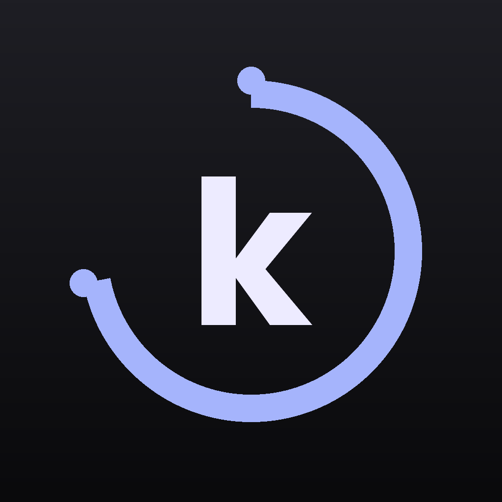
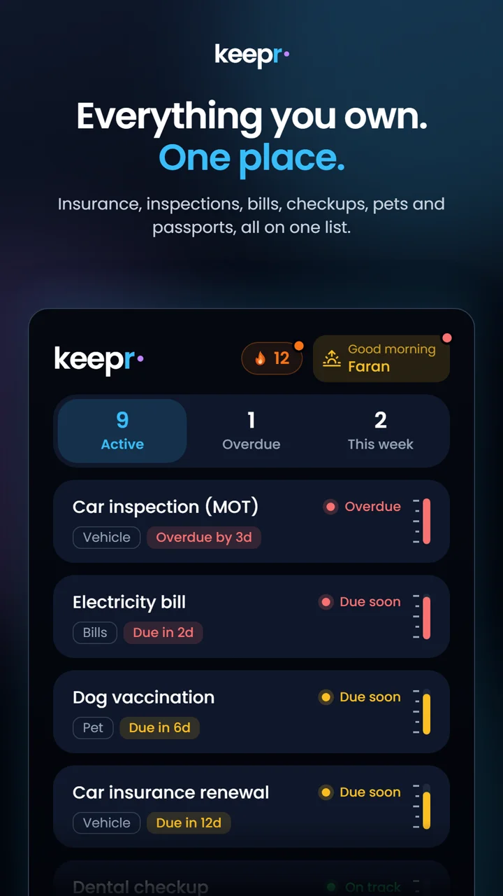
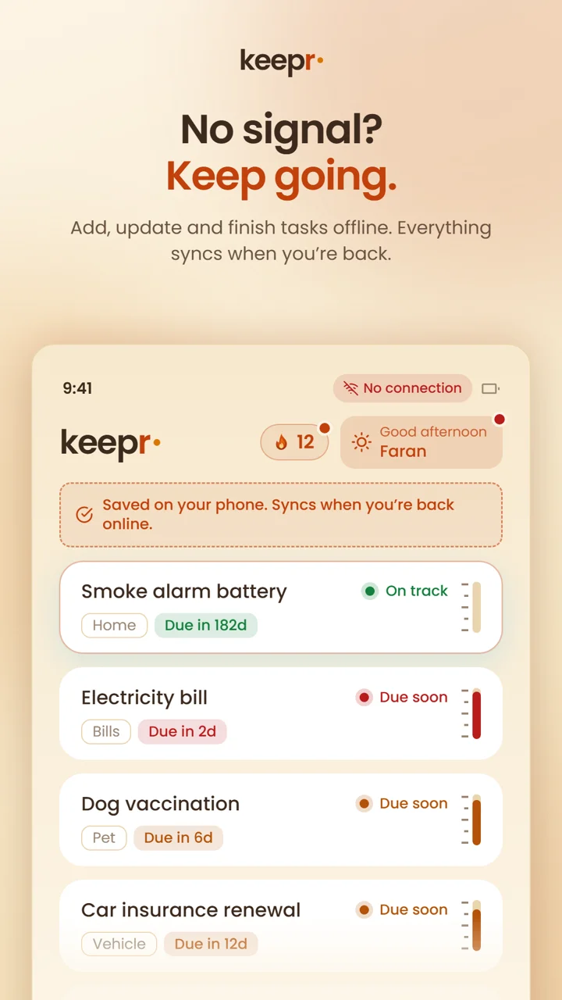
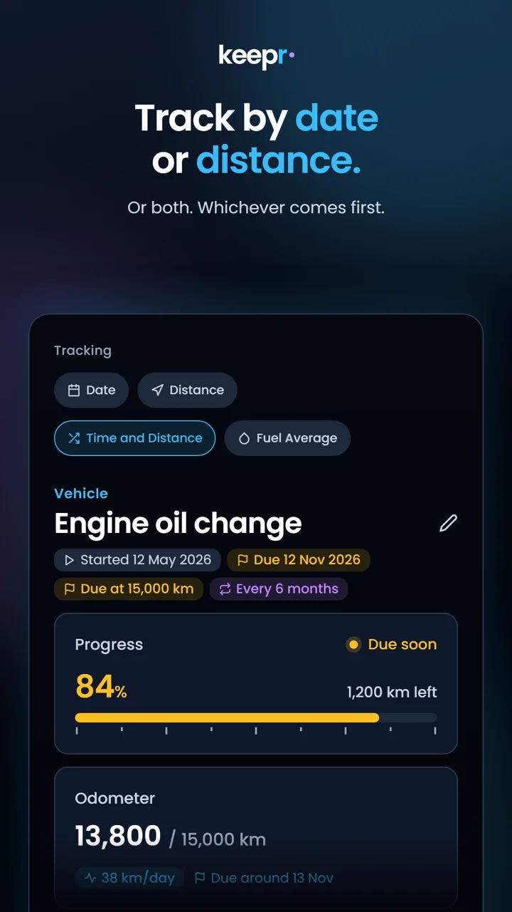
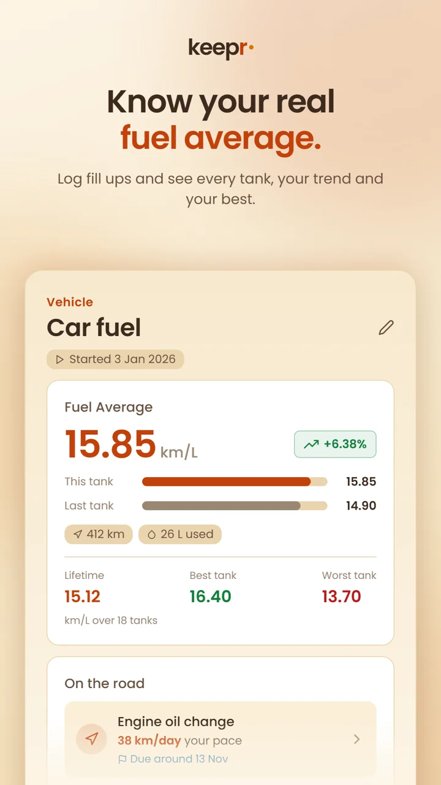
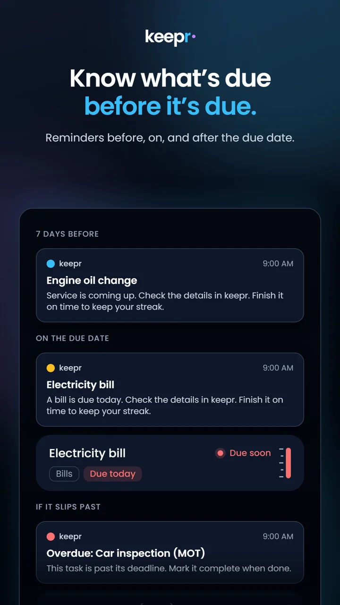
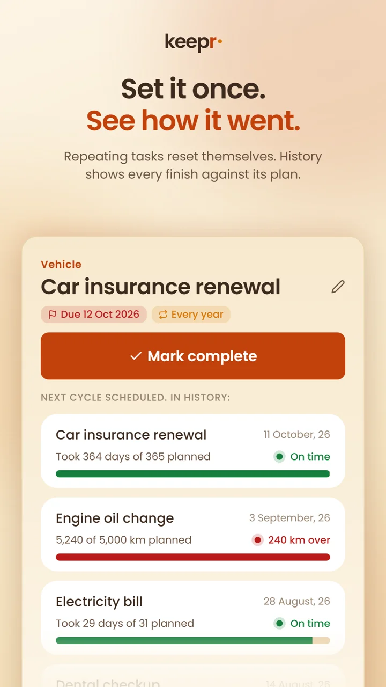
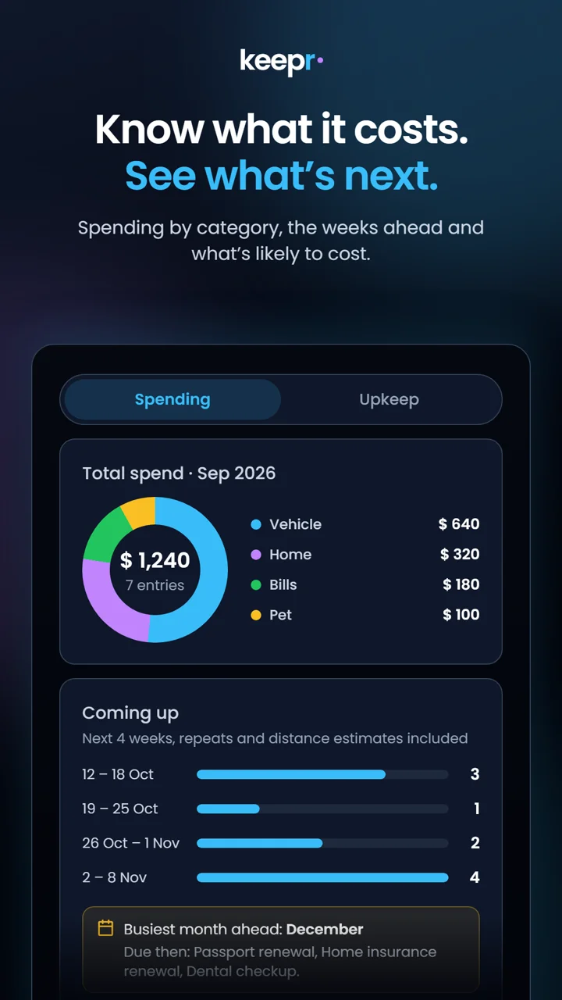
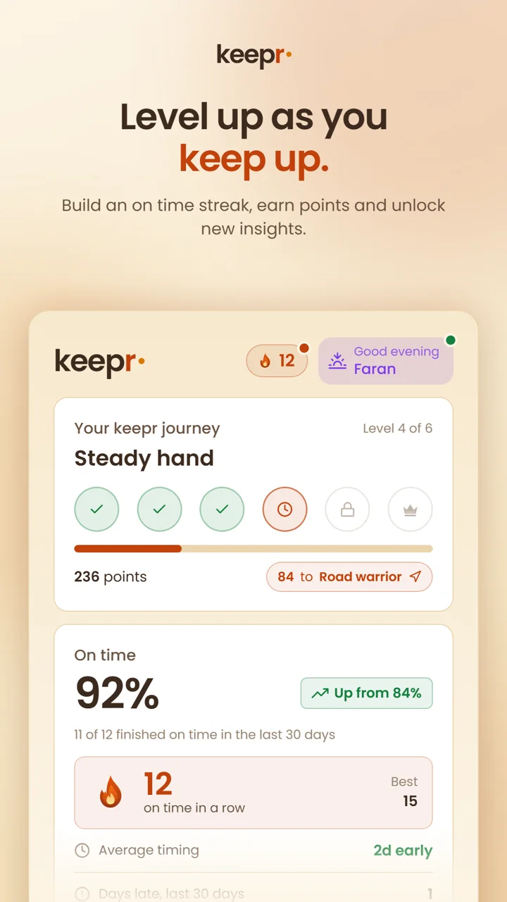

Track the life of everything you own — cars, home, pets, bills and more.
Log what you need to stay on top of, choose how it's measured, and keepr reminds you before it's due. See where your money goes, build an on-time streak, and level up as you keep up.
FreeNo adsWorks offline
53-second tour · tap for sound
Real features, no fluff — this is exactly what the app does.

Twelve built-in categories — Vehicle, Home, Appliance, Bills, Subscription, Pet, Health, Electronics, Garden, Consumable, Document and Personal — or make your own. Rename one to a name you already use and the two merge.
Active, Overdue and This week tabs, a status on every card, and a greeting that tells you what's due.

Add, update and finish tasks in the garage, the basement or on the road. keepr syncs everything as soon as you're back online, across all your devices.

Measure each item by what matters — a date, a distance, or whichever comes first. Log odometer readings and keepr works out your daily pace and an estimated due date.
Recurring tasks roll over to the next cycle automatically when you're done.

Log each fill-up and keepr does the maths: this tank versus the last, your best and worst, and lifetime fuel economy — in km or miles, litres or gallons.

Get notified days ahead, on the due date, and again if something slips overdue — at 9 AM in your own timezone. Reminders mention your streak so you know what's at stake.

Mark it done and the next cycle is scheduled. Every finish is recorded — on time or how late, and the time or distance used against plan. Delete a mistyped odometer reading straight from History.

Log what each service costs and see totals by month, half-year or year, broken down by task, category or type. Switch to Upkeep for what's coming up, what needs attention, a four-week outlook, your busiest month and six months of projected spend.

Finish on time to light your streak and earn points across six levels — from Rookie to Master keepr. Each level unlocks new insights: the On time card with your on-time rate and timing, and the On the road card with your driving pace and fuel economy.
km or miles, litres or gallons — each set on its own. US and UK devices start on their own units.
Costs in your own currency, wherever you live, with reminders timed to your local timezone.
Clean, fast, distraction-free — in a light or dark theme to suit you.
A quick intro tour shows you around, and Help explains every feature — including your streak and keepr levels.
Free, with no advertising and no analytics SDKs. Your data is tied to your account, and you can delete it any time.